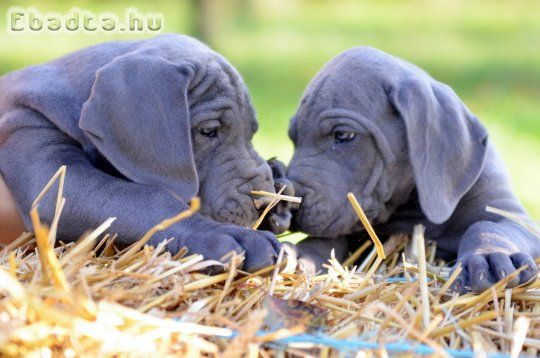
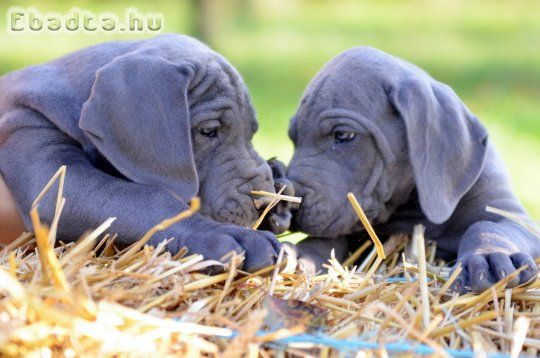
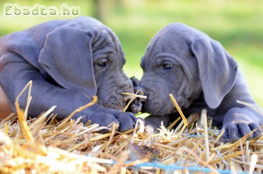

") 

A Német dog (vagy Dán dog) az egyik legnagyobb kutyafajta a világon. Impozáns megjelenésüknek és markáns szája ellenére nagyon barátságos, nyugodt és imád gazdájához bújni, ehhez pedig sokszor egész testsúlyát használja.

Ha szeretnél mégtöbbet megtudni erről a fajtáról nézd meg az alábbi linken található videót! https://youtu.be/whqgSY09Etc
Forrás: https://www.zooplus.hu/magazin/kutya-magazin/kutyafajtak/nemet-dog